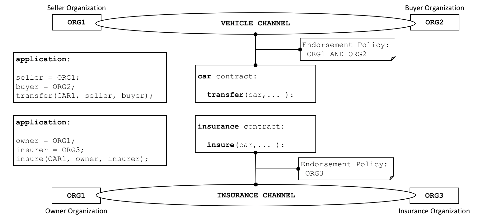

Smart Contracts and Chaincode¶
Audience: Architects, application and smart contract developers, administrators
From an application developer’s perspective, a smart contract, together with the ledger, form the heart of a Hyperledger Fabric blockchain system. Whereas a ledger holds facts about the current and historical state of a set of business objects, a smart contract defines the executable logic that generates new facts that are added to the ledger. A chaincode is typically used by administrators to group related smart contracts for deployment, but can also be used for low level system programming of Fabric. In this topic, we’ll focus on why both smart contracts and chaincode exist, and how and when to use them.
In this topic, we’ll cover:
- What is a smart contract
- A note on terminology
- Smart contracts and the ledger
- How to develop a smart contract
- The importance of endorsement policies
- Valid transactions
- Smart contracts and channels
- Communicating between smart contracts
- What is system chaincode?
Smart contract¶
Before businesses can transact with each other, they must define a common set of contracts covering common terms, data, rules, concept definitions, and processes. Taken together, these contracts lay out the business model that govern all of the interactions between transacting parties.
 A smart contract defines the
rules between different organizations in executable code. Applications invoke a
smart contract to generate transactions that are recorded on the ledger.
A smart contract defines the
rules between different organizations in executable code. Applications invoke a
smart contract to generate transactions that are recorded on the ledger.
Using a blockchain network, we can turn these contracts into executable programs – known in the industry as smart contracts – to open up a wide variety of new possibilities. That’s because a smart contract can implement the governance rules for any type of business object, so that they can be automatically enforced when the smart contract is executed. For example, a smart contract might ensure that a new car delivery is made within a specified timeframe, or that funds are released according to prearranged terms, improving the flow of goods or capital respectively. Most importantly however, the execution of a smart contract is much more efficient than a manual human business process.
In the diagram above, we can see how two organizations,
ORG1 and ORG2 have defined a car smart contract to query, transfer and
update cars. Applications from these organizations invoke this smart contract
to perform an agreed step in a business process, for example to transfer
ownership of a specific car from ORG1 to ORG2.
Terminology¶
Hyperledger Fabric users often use the terms smart contract and chaincode interchangeably. In general, a smart contract defines the transaction logic that controls the lifecycle of a business object contained in the world state. It is then packaged into a chaincode which is then deployed to a blockchain network. Think of smart contracts as governing transactions, whereas chaincode governs how smart contracts are packaged for deployment.
 A smart contract is defined
within a chaincode. Multiple smart contracts can be defined within the same
chaincode. When a chaincode is deployed, all smart contracts within it are made
available to applications.
A smart contract is defined
within a chaincode. Multiple smart contracts can be defined within the same
chaincode. When a chaincode is deployed, all smart contracts within it are made
available to applications.
In the diagram, we can see a vehicle chaincode that contains three smart
contracts: cars, boats and trucks. We can also see an insurance
chaincode that contains four smart contracts: policy, liability,
syndication and securitization. In both cases these contracts cover key
aspects of the business process relating to vehicles and insurance. In this
topic, we will use the car contract as an example. We can see that a smart
contract is a domain specific program which relates to specific business
processes, whereas a chaincode is a technical container of a group of related
smart contracts for installation and instantiation.
Ledger¶
At the simplest level, a blockchain immutably records transactions which update states in a ledger. A smart contract programmatically accesses two distinct pieces of the ledger – a blockchain, which immutably records the history of all transactions, and a world state that holds a cache of the current value of these states, as it’s the current value of an object that is usually required.
Smart contracts primarily put, get and delete states in the world state, and can also query the immutable blockchain record of transactions.
- A get typically represents a query to retrieve information about the current state of a business object.
- A put typically creates a new business object or modifies an existing one in the ledger world state.
- A delete typically represents the removal of a business object from the current state of the ledger, but not its history.
Smart contracts have many APIs available to them. Critically, in all cases, whether transactions create, read, update or delete business objects in the world state, the blockchain contains an immutable record of these changes.
Development¶
Smart contracts are the focus of application development, and as we’ve seen, one or more smart contracts can be defined within a single chaincode. Deploying a chaincode to a network makes all its smart contracts available to the organizations in that network. It means that only administrators need to worry about chaincode; everyone else can think in terms of smart contracts.
At the heart of a smart contract is a set of transaction definitions. For
example, look at
fabcar.js,
where you can see a smart contract transaction that creates a new car:
async createCar(ctx, carNumber, make, model, color, owner) {
const car = {
color,
docType: 'car',
make,
model,
owner,
};
await ctx.stub.putState(carNumber, Buffer.from(JSON.stringify(car)));
}
You can learn more about the Fabcar smart contract in the Writing your first application tutorial.
A smart contract can describe an almost infinite array of business use cases relating to immutability of data in multi-organizational decision making. The job of a smart contract developer is to take an existing business process that might govern financial prices or delivery conditions, and express it as a smart contract in a programming language such as JavaScript, GOLANG or Java. The legal and technical skills required to convert centuries of legal language into programming language is increasingly practiced by smart contract auditors. You can learn about how to design and develop a smart contract in the Developing applications topic.
Endorsement¶
Associated with every chaincode is an endorsement policy that applies to all of the smart contracts defined within it. An endorsement policy is very important; it indicates which organizations in a blockchain network must sign a transaction generated by a given smart contract in order for that transaction to be declared valid.
 Every smart contract has an
endorsement policy associated with it. This endorsement policy identifies which
organizations must approve transactions generated by the smart contract before
those transactions can be identified as valid.
Every smart contract has an
endorsement policy associated with it. This endorsement policy identifies which
organizations must approve transactions generated by the smart contract before
those transactions can be identified as valid.
An example endorsement policy might define that three of the four organizations participating in a blockchain network must sign a transaction before it is considered valid. All transactions, whether valid or invalid are added to a distributed ledger, but only valid transactions update the world state.
If an endorsement policy specifies that more than one organization must sign a
transaction, then the smart contract must be executed by a sufficient set of
organizations in order for a valid transaction to be generated. In the example
above, a smart contract transaction to transfer a car would
need to be executed and signed by both ORG1 and ORG2 for it to be valid.
Endorsement policies are what make Hyperledger Fabric different to other
blockchains like Ethereum or Bitcoin. In these systems valid transactions can be
generated by any node in the network. Hyperledger Fabric more realistically
models the real world; transactions must be validated by trusted organizations
in a network. For example, a government organization must sign a valid
issueIdentity transaction, or both the buyer and seller of a car must sign
a car transfer transaction. Endorsement policies are designed to allow
Hyperledger Fabric to better model these types of real-world interactions.
Finally, endorsement policies are just one example of policy in Hyperledger Fabric. Other policies can be defined to identify who can query or update the ledger, or add or remove participants from the network. In general, policies should be agreed in advance by the consortium of organizations in a blockchain network, although they are not set in stone. Indeed, policies themselves can define the rules by which they can be changed. And although an advanced topic, it is also possible to define custom endorsement policy rules over and above those provided by Fabric.
Valid transactions¶
When a smart contract executes, it runs on a peer node owned by an organization in the blockchain network. The contract takes a set of input parameters called the transaction proposal and uses them in combination with its program logic to read and write the ledger. Changes to the world state are captured as a transaction proposal response (or just transaction response) which contains a read-write set with both the states that have been read, and the new states that are to be written if the transaction is valid. Notice that the world state is not updated when the smart contract is executed!
 All transactions have an
identifier, a proposal, and a response signed by a set of organizations. All
transactions are recorded on the blockchain, whether valid or invalid, but only
valid transactions contribute to the world state.
All transactions have an
identifier, a proposal, and a response signed by a set of organizations. All
transactions are recorded on the blockchain, whether valid or invalid, but only
valid transactions contribute to the world state.
Examine the car transfer transaction. You can see a transaction t3 for a car
transfer between ORG1 and ORG2. See how the transaction has input {CAR1, ORG1, ORG2} and output {CAR1.owner=ORG1, CAR1.owner=ORG2}, representing the
change of owner from ORG1 to ORG2. Notice how the input is signed by the
application’s organization ORG1, and the output is signed by both
organizations identified by the endorsement policy, ORG1 and ORG2. These
signatures were generated by using each actor’s private key, and mean that
anyone in the network can verify that all actors in the network are in agreement
about the transaction details.
A transaction that is distributed to all peer nodes in the network is validated in two phases. Firstly, the transaction is checked to ensure it has been signed by sufficient organizations according to the endorsement policy. Secondly, it is checked to ensure that the current value of the world state matches the read set of the transaction when it was signed by the endorsing peer nodes; that there has been no intermediate update. If a transaction passes both these tests, it is marked as valid. All transactions are added to the blockchain history, whether valid or invalid, but only valid transactions result in an update to the world state.
In our example, t3 is a valid transaction, so the owner of CAR1 has been
updated to ORG2. However, t4 (not shown) is an invalid transaction, so while
it was recorded in the ledger, the world state was not updated, and CAR2
remains owned by ORG2.
Finally, to understand how to use a smart contract or chaincode with world state, read the chaincode namespace topic.
Channels¶
Hyperledger Fabric allows an organization to simultaneously participate in multiple, separate blockchain networks via channels. By joining multiple channels, an organization can participate in a so-called network of networks. Channels provide an efficient sharing of infrastructure while maintaining data and communications privacy. They are independent enough to help organizations separate their work traffic with different counterparties, but integrated enough to allow them to coordinate independent activities when necessary.
 A channel provides a completely separate communication mechanism between a set of organizations. When a chaincode is instantiated on a channel, an endorsement policy is defined for it; all the smart contracts within the chaincode are made available to the applications on that channel.
An administrator defines an endorsement policy for a chaincode when it is instantiated on a channel, and can change it when the chaincode is upgraded. The endorsement policy applies equally to all smart contracts defined within the same chaincode deployed to a channel. It also means that a single smart contract can be deployed to different channels with different endorsement policies.
In the example above, the car contract is deployed to the
VEHICLE channel, and an insurance contract is deployed to the INSURANCE
channel. The car contract has an endorsement policy that requires ORG1 and
ORG2 to sign transactions before they are considered valid, whereas the
insurance contract has an endorsement policy that only requires ORG3 to sign
valid transactions. ORG1 participates in two networks, the VEHICLE channel
and the INSURANCE network, and can coordinate activity across these two
networks with ORG2 and ORG3 respectively.
Intercommunication¶
Smart Contracts are able to call to other smart contracts both within the same channel and across different channels. It this way, they can read and write world state data to which they would not otherwise have access due to smart contract namespaces.
There are limitations to this inter-contract communication, which are described fully in the chaincode namespace topic.
System chaincode¶
The smart contracts defined within a chaincode encode the domain dependent rules for a business process agreed between a set of blockchain organizations. However, a chaincode can also define low-level program code which corresponds to domain independent system interactions, unrelated to these smart contracts for business processes.
The following are the different types of system chaincodes and their associated abbreviations:
- Lifecycle system chaincode (LSCC) runs in all peers to handle package signing, install, instantiate, and upgrade chaincode requests. You can read more about the LSCC implements this process.
- Configuration system chaincode (CSCC) runs in all peers to handle changes to a channel configuration, such as a policy update. You can read more about this process in the following chaincode topic.
- Query system chaincode (QSCC) runs in all peers to provide ledger APIs which include block query, transaction query etc. You can read more about these ledger APIs in the transaction context topic.
- Endorsement system chaincode (ESCC) runs in endorsing peers to cryptographically sign a transaction response. You can read more about how the ESCC implements this process.
- Validation system chaincode (VSCC) validates a transaction, including checking endorsement policy and read-write set versioning. You can read more about the LSCC implements this process.
It is possible for low level Fabric developers and administrators to modify these system chaincodes for their own uses. However, the development and management of system chaincodes is a specialized activity, quite separate from the development of smart contracts, and is not normally necessary. Changes to system chaincodes must be handled with extreme care as they are fundamental to the correct functioning of a Hyperledger Fabric network. For example, if a system chaincode is not developed correctly, one peer node may update its copy of the world state or blockchain differently to another peer node. This lack of of consensus is one form of a ledger fork, a very undesirable situation.